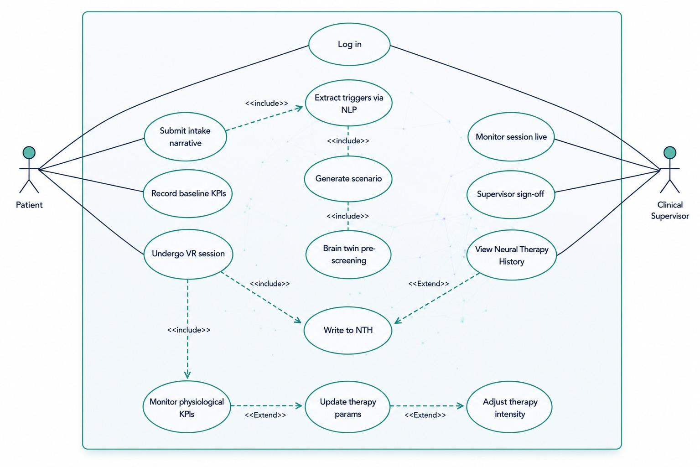

Mindro is an AI-driven adaptive XR therapy system for PTSD. It personalizes exposure to each patient, previews the brain's response before exposure, and grows safer with every session.
PTSD affects millions. Facing fears gradually in a safe space helps, yet current systems treat almost every patient the same way.
Scenarios are pre-built for the "average" patient, not for a person's real trauma or triggers.
Clinicians cannot see how a patient might react before exposure actually happens.
Therapy follows a fixed script instead of responding to the patient in real time.
One closed-loop system that personalizes, previews, and adapts, with a clinician in control at every step.
Reads the patient's narrative and extracts their real triggers and intensity.
Generates a personalized VR exposure scene matched to those triggers.
A Digital Brain Twin simulates the likely neural response first, as a safety gate.
Adjusts intensity and pacing from the body's real, measured responses.
Steps 1 to 4 run before exposure. The Brain Twin gates each scene: pass goes to a clinician-led session, fail regenerates it. The dashed loop feeds every outcome back so the next session improves.
Five milestone-driven phases give clear structure; Agile practices inside each phase allow parallel work and iteration. Safety-critical parts are built and validated incrementally.
Scope, roles, and development environment.
NLP, generator, Brain Twin, KPIs, history built in parallel.
Connect the pipeline and add the learning agent.
End-to-end and safety testing of the full loop.
Report, demo, and final submission.

Only two people interact with Mindro: the patient who tells their story and lives the session, and the clinician who approves and oversees everything.